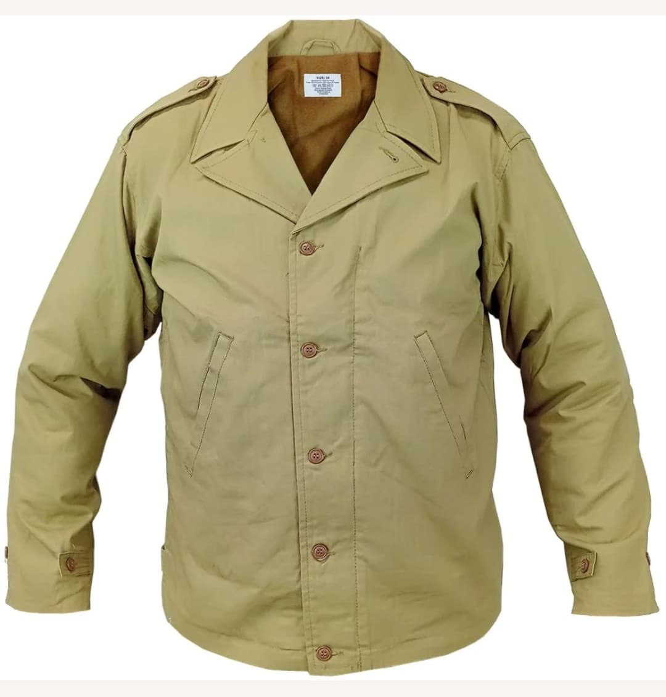
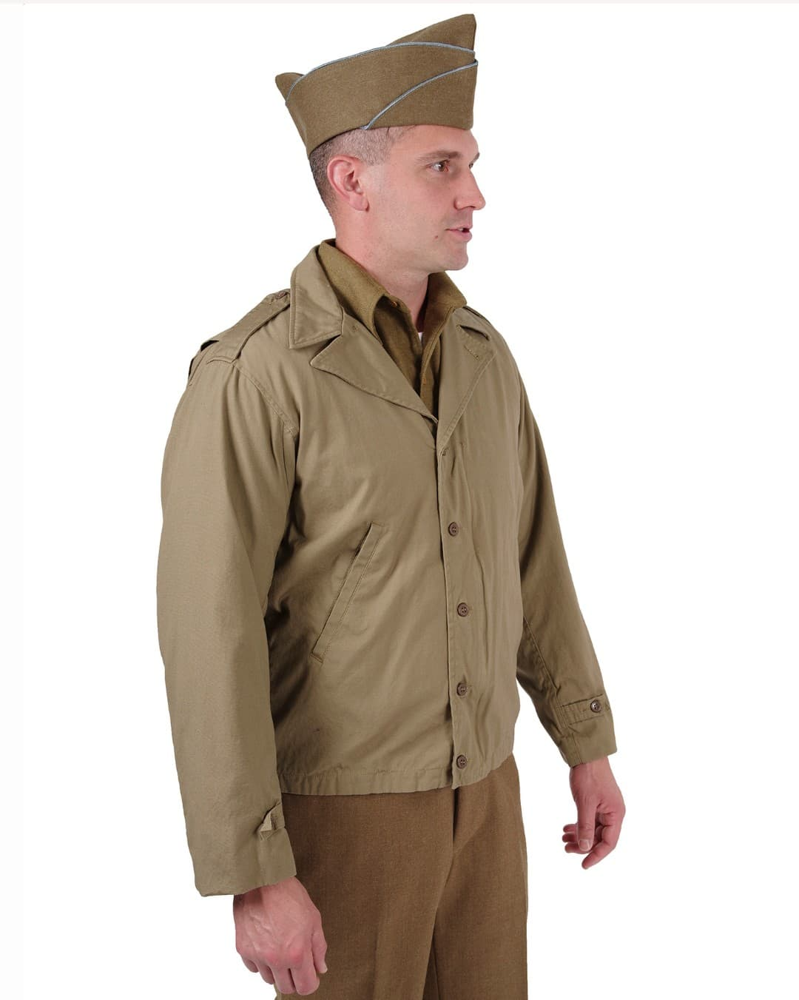

La veste US M-1941, officiellement désignée Field Jacket, est l’un des premiers équipements modernisés de l’US Army au début de la Seconde Guerre mondiale. Conçue pour offrir une protection légère contre le vent et le froid, elle accompagne les soldats américains lors des premières campagnes en Europe et dans le Pacifique.
Sa silhouette simple, sa couleur Olive Drab n°2 et sa fabrication en popeline coupe-vent en font une pièce emblématique des années 1941–1943. Bien qu’appréciée pour son confort, elle montre rapidement ses limites en climat humide ou froid, ce qui conduit à l’apparition de la M-1943, plus robuste.

Utilisée en Afrique du Nord, en Sicile et en Italie, la M-1941 accompagne les premiers engagements américains en Europe et dans le Pacifique. Sa coupe légère la rend polyvalente, mais elle montre ses limites en climat froid ou humide.

La M-1941 est reconnaissable à sa couleur Olive Drab n°2, son tissu popeline coupe-vent, sa doublure en laine flanelle et ses deux poches obliques. Elle sera remplacée par la M-1943, plus robuste et mieux adaptée aux conditions de combat.